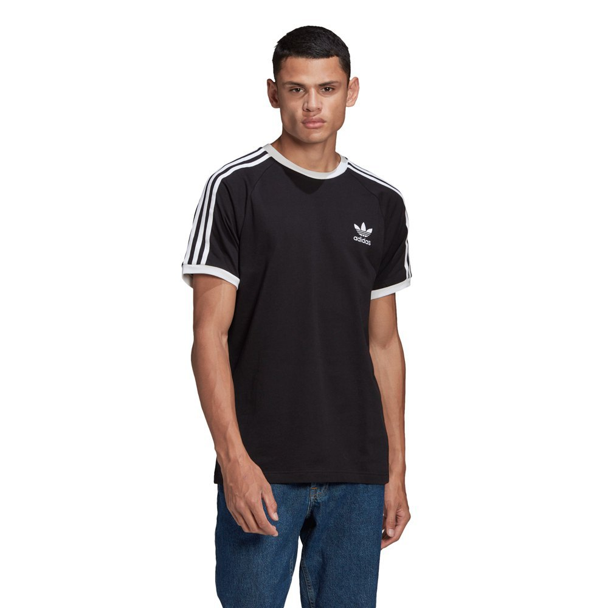
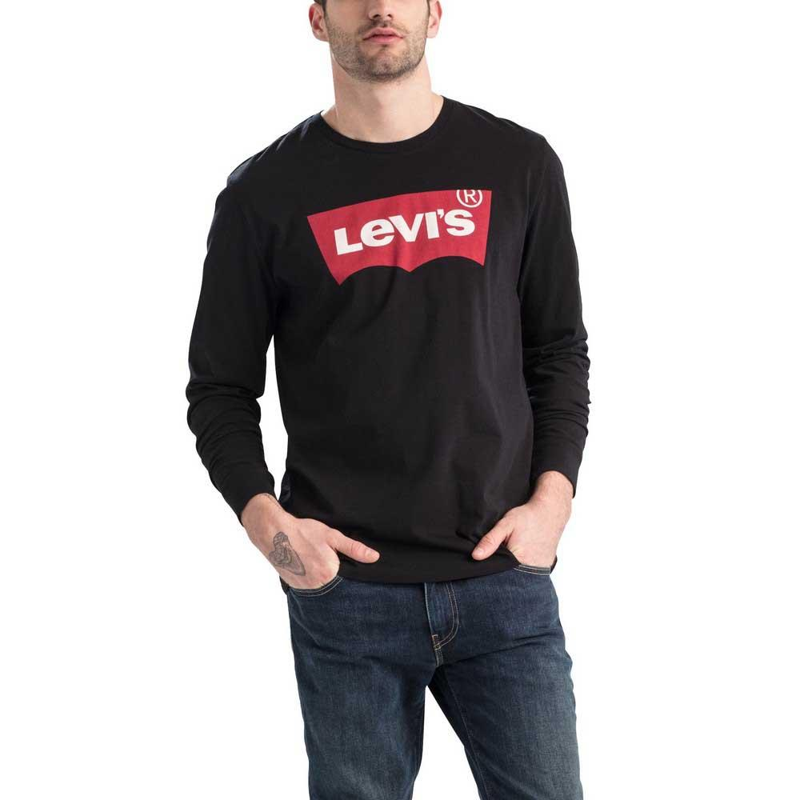
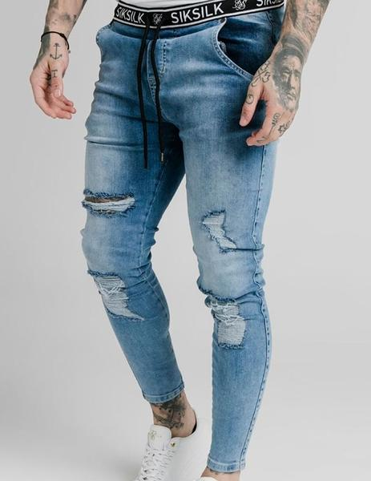
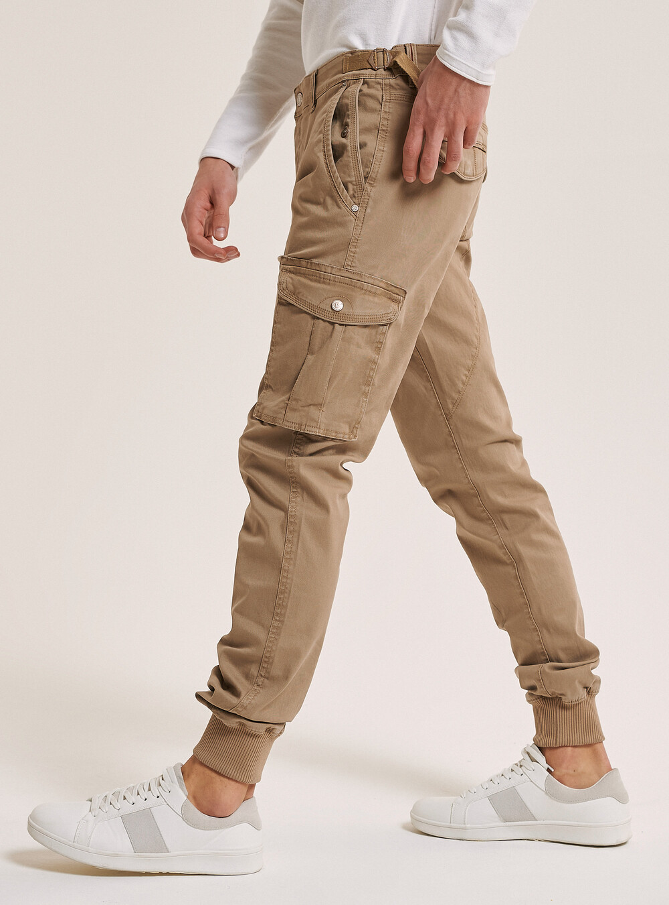

Sudaderas
La sudadera era una prenda utilizada en actividades deportivas pero al aumentar su uso en actividades rutinarias del día a día se ha convertido en una prenda de las más cotizadas por todo el público.
Visita este sitio para más información: Pincha aquí
Camisetas
Una camiseta, es una prenda de ropa interior de abrigo por lo general de mangas cortas, cuello redondo o en forma de "V". Existen diversos diseños, que varían algunas de sus características básicas, por ejemplo, modificando el cuello redondo (también llamado "en caja") por otro en "V" (o de pico) o añadiendo bolsillos. Además de manga corta, las hay de manga larga e incluso sin mangas, y también de tirantes (esta última llamada también esqueleto, camisilla o franelilla). Su longitud varía desde la mitad del muslo hasta por encima del ombligo, aunque lo normal es que acabe donde empieza el pantalón o falda, es decir, sobre las caderas.


Pantalones
Esta confección de tela de distintos materiales (algodón, mezclilla, poliéster, pana, etc.) tiene tres aberturas; una de ellas se ajusta a la cintura y las otras dos en cada una de las piernas. El pantalón puede ser largo, en cuyo caso las bocas de las piernas llegan a la altura de los tobillos o incluso más abajo, o puede ser corto en distintas graduaciones, que van desde la pantorrilla (piratas) hasta la rodilla (pantaloneta) o la ingle (mini-cortos). Cuando la largura llega a media pantorrilla, se denominan pantalones Capri. Esta vestimenta es usada tanto por varones como por mujeres, y suele tener también accesorios tales como bolsillos para guardar elementos personales, cremallera (bragueta en el caso de los varones), para poder vestir más fácilmente aquellos de materiales menos flexibles, y pasacintos, para poder sostener aquellos que sean holgados de cintura.

